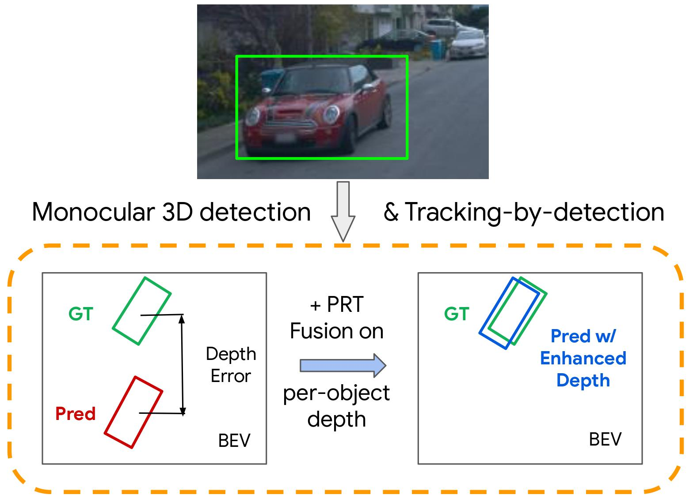
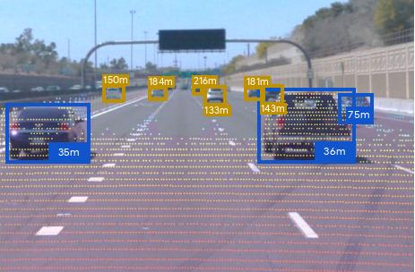

3D perception
Representative papers are shown with red border

Depth Estimation Matters Most: Improving Per-Object Depth Estimation for Monocular 3D Detection and Tracking
Longlong Jing, Ruichi Yu, Jiyang Gao, Henrik Kretzschmar, Kang Li, Charles R. Qi, Hang Zhao, Alper Ayvaci, Xu Chen, Dillon Cower, Yingwei Li, Yurong You, Han Deng, Congcong Li, Dragomir Anguelov
ICRA, 2022

R4D: Utilizing Reference Objects for Long-Range Distance Estimation
Yingwei Li, Tiffany Chen, Maya Kabkab, Ruichi Yu, Longlong Jing, Yurong You, Hang Zhao
ICLR, 2022
[Paper] [Supplementary] [Bibtex]